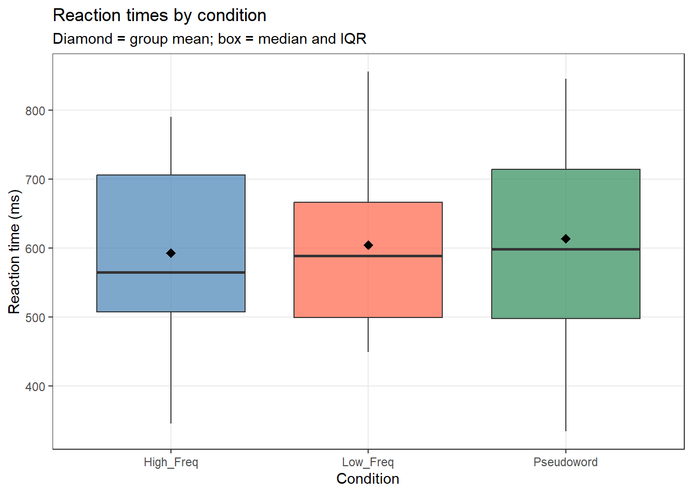
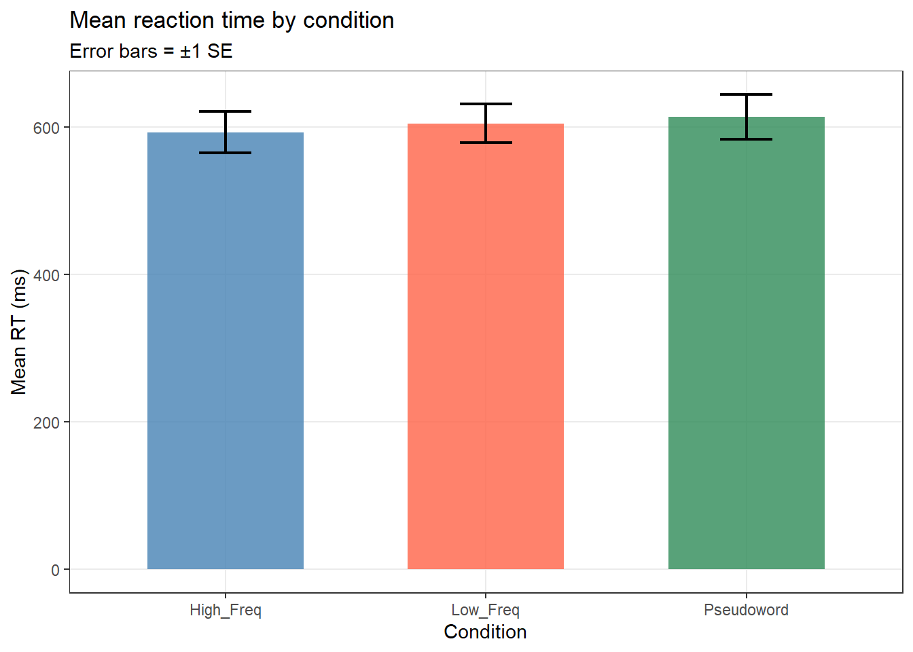
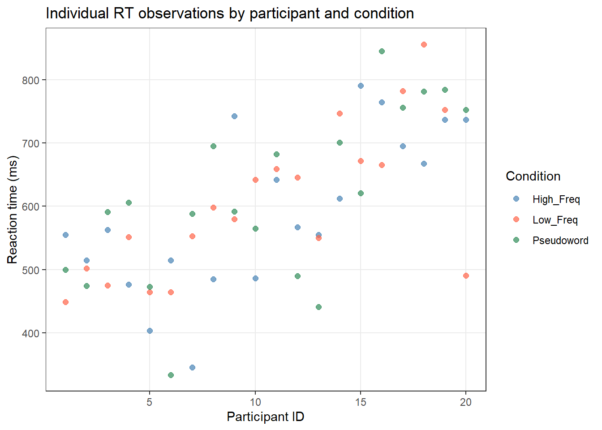

Code
install.packages("dplyr")
install.packages("ggplot2")
install.packages("tidyr")
install.packages("flextable")
install.packages("readxl")
install.packages("here")
install.packages("checkdown") 

This tutorial introduces R and RStudio — the programming language and development environment used throughout LADAL. It is aimed at complete beginners with no prior programming experience, and walks through everything you need to get up and running: installing software, understanding the RStudio interface, setting up a reproducible project, and working with R for the first time.
R is a free, open-source programming language designed specifically for data analysis and statistics. It is the most widely used tool for quantitative research in linguistics, the social sciences, and the digital humanities — and for good reason. R gives you complete control over your analysis, produces publication-quality graphics, and keeps your work fully transparent and reproducible.
This tutorial will not turn you into an expert. Its goal is to give you a solid, well-structured foundation: to know where things are, how to think about R, and how to start doing real things with data. The rest of LADAL’s tutorials build from here.
This tutorial has no prerequisites — it is designed for complete beginners. However, the following background tutorials are helpful companions:
ggplot2Martin Schweinberger. 2026. Getting Started with R and RStudio. The Language Technology and Data Analysis Laboratory (LADAL), The University of Queensland, Australia. url: https://ladal.edu.au/tutorials/intror/intror.html (Version 2026.03.27), doi: .
Before diving in, it is worth briefly explaining why R is worth learning.
R is free and open-source — there are no licensing costs, ever. It is the dominant tool for statistical analysis in linguistics, psychology, and the social sciences. It has a vast ecosystem of over 20,000 contributed packages that extend its capabilities to cover almost any analytical task imaginable. Its reproducibility features — the ability to combine code, output, and prose in a single document — mean your analyses can be fully transparent and re-run by anyone. And its visualisation capabilities, particularly through ggplot2, are unmatched.
The learning curve is real but manageable. This tutorial gives you the foundation you need.
Install the packages used in this tutorial (only needed once):
install.packages("dplyr")
install.packages("ggplot2")
install.packages("tidyr")
install.packages("flextable")
install.packages("readxl")
install.packages("here")
install.packages("checkdown") Load the packages at the start of each session:
library(dplyr) # data manipulation
library(ggplot2) # data visualisation
library(tidyr) # data reshaping
library(flextable) # formatted tables
library(here) # robust file paths
library(checkdown) # interactive exercises What you’ll learn: How to install R and RStudio on your computer
Why it matters: You need both installed to follow any LADAL tutorial
Time: ~15–30 minutes (mostly waiting for downloads)
R and RStudio are two separate pieces of software that work together. Think of R as the engine and RStudio as the car — you need both, and you interact almost exclusively with RStudio.
R must be installed before RStudio. Visit cran.r-project.org and select the download for your operating system:
Run the downloaded installer and accept the default settings throughout.
R releases a new version approximately once a year. To check your current version, run R.version$version.string in the console. To update on Windows, the installr package automates the process:
install.packages("installr")
library(installr)
updateR() On Mac, download the new version from CRAN and install over the existing version.
Visit posit.co/download/rstudio-desktop and download the free RStudio Desktop version for your operating system. Run the installer and accept the defaults.
After installation, open RStudio (not R directly). RStudio will automatically detect your R installation.
What you’ll learn: How to navigate the four panes of RStudio and what each one does
Key concept: The difference between the Console (run immediately) and the Script Editor (save and reuse)
When you first open RStudio, you will see an interface divided into panes. The screenshot below shows a typical RStudio session with all four panes visible.

RStudio has four main panes:
This is where you write and save code. Code typed here does not run automatically — you must explicitly execute it. This is where all your analysis lives.
To run a line of code from the Script Editor, place your cursor on that line and press Ctrl + Enter (Windows/Linux) or Cmd + Enter (Mac). To run a highlighted block, select the code first and then press the same shortcut.
This is where R executes code and displays text output. When you run code from the Script Editor, it appears here. You can also type directly into the Console and press Enter to run commands immediately.
Use the Console for quick experiments. Use the Script Editor for anything you want to keep.
Tab to autocomplete?function_name to open the help page for any functionThe Environment tab shows all objects currently loaded in your R session — data frames, variables, vectors, and so on. Clicking on a data frame here opens a spreadsheet-style viewer.
The History tab logs all commands you have run in the current session.
This multi-tab pane contains:
?)What you’ll learn: How to set up a reproducible project in RStudio; what an R Notebook is and why to use one
Key concept: An R Project keeps all your files, code, and data together in one self-contained folder
Good organisation before you start coding saves a great deal of trouble later. This section walks through the recommended setup.
Before opening RStudio, create a folder on your computer for your project. Inside it, create the following sub-folders:
my_project/
├── data/ ← raw and processed data files
├── images/ ← figures saved from R
├── tables/ ← tables exported from R
└── docs/ ← notes, reports, and output documents 
An R Project tells RStudio that a folder is a self-contained project. It sets the working directory automatically (so file paths are predictable) and keeps your project’s history and settings separate from other projects.
To create an R Project:
File → New ProjectExisting DirectoryCreate ProjectRStudio will restart and you will see your project name in the top-right corner. You are now working inside your project.

When you open RStudio, always open your project first (either by double-clicking the .Rproj file in your folder, or via File → Open Project). This ensures file paths work correctly and your environment is isolated.
An R Notebook (.Rmd or .qmd file) combines prose, code, and output in a single document. This is the standard format for LADAL tutorials and is highly recommended for your own analyses — it keeps your thinking and your code together.
To create an R Notebook:
File → New File → R Notebook
The notebook uses R Markdown — a simple formatting syntax explained below.
R Markdown lets you write formatted prose alongside executable code. Here is a quick reference:
# Heading 1
## Heading 2
### Heading 3
**bold text**
*italic text*
`inline code`
- bullet point
- another bullet
1. numbered item
2. another item
[link text](https://url.com) Code is written inside code chunks (fenced with triple backticks):
::: {.cell}
```{.r .cell-code}
# your R code here
2 + 2
```
::: {.cell-output .cell-output-stdout}
```
[1] 4
```
:::
:::When you click Knit (or Render in Quarto), R Markdown executes all code chunks and weaves the output together with your prose into a finished HTML, PDF, or Word document.
The power of R Notebooks is reproducibility: your entire analysis — every number, table, and figure — is regenerated from scratch each time you render the document. Anyone with your .Rmd file and data can reproduce your results exactly.
What you’ll learn: The core building blocks of R — objects, functions, operators, and assignment
Key concepts: Everything in R is an object; everything you do in R uses a function
At the top of any script or notebook, set global options and load packages. This makes your session reproducible from the very first line.
# Global options
options(stringsAsFactors = FALSE) # keep character variables as text
options(scipen = 100) # avoid scientific notation
options(max.print = 100) # limit printed output
# Load packages
library(dplyr)
library(ggplot2) In R, everything is stored as an object. You create objects using the assignment operator <-:
# Create a numeric object
my_number <- 42
# Create a character (text) object
my_name <- "linguistics"
# Create a logical object
is_true <- TRUE
# View an object by typing its name
my_number [1] 42my_name [1] "linguistics"is_true [1] TRUEGood object names are:
- lowercase with underscores for spaces: word_count, not Word Count
- descriptive: reaction_time_ms is better than x
- not starting with a number: data1 is valid; 1data is not
- not reserved words: don’t use c, t, df, mean, TRUE, FALSE, NULL as object names
R is case-sensitive: MyData and mydata are different objects.
A function takes one or more inputs (called arguments), does something, and returns an output. Functions are called by name followed by parentheses containing the arguments:
# sqrt() takes a number and returns its square root
sqrt(144) [1] 12# round() rounds a number to a specified number of decimal places
round(3.14159, digits = 2) [1] 3.14# nchar() counts the characters in a string
nchar("linguistics") [1] 11# paste() joins strings together
paste("language", "data", "analysis", sep = "-") [1] "language-data-analysis"You can nest functions — the inner function runs first:
# Round the square root of 2 to 3 decimal places
round(sqrt(2), digits = 3) [1] 1.414R provides standard arithmetic and logical operators:
# Arithmetic operators
10 + 3 # addition [1] 1310 - 3 # subtraction [1] 710 * 3 # multiplication [1] 3010 / 3 # division [1] 3.33333310 ^ 2 # exponentiation [1] 10010 %% 3 # modulo (remainder) [1] 1# Comparison operators (return TRUE or FALSE)
5 > 3 # greater than [1] TRUE5 < 3 # less than [1] FALSE5 == 5 # equal to (note: double equals!) [1] TRUE5 != 3 # not equal to [1] TRUE5 >= 5 # greater than or equal to [1] TRUE# Logical operators
TRUE & FALSE # AND [1] FALSETRUE | FALSE # OR [1] TRUE!TRUE # NOT [1] FALSE= vs ==
One of the most common beginner errors: = is used for assignment (interchangeable with <- in most cases, though <- is preferred); == tests whether two things are equal. 5 = 3 will produce an error; 5 == 3 returns FALSE.
Q1. What does the assignment operator <- do?
Q2. You run my_var <- 10. What will my_var * 3 + 1 return?
Q3. Which of the following is NOT a valid object name in R?
What you’ll learn: The six basic data types in R and why they matter
Key concept: The type of your data determines which operations are valid
Every object in R has a type (also called a class). The four types you will encounter most often are:
# Numeric (continuous numbers)
age <- 28.5
class(age) [1] "numeric"# Integer (whole numbers; the L suffix forces integer type)
count <- 42L
class(count) [1] "integer"# Character (text; always in quotes)
language <- "English"
class(language) [1] "character"# Logical (TRUE or FALSE only)
is_native <- TRUE
class(is_native) [1] "logical"You can check the type of any object with class() or typeof(), and test for specific types:
is.numeric(age) [1] TRUEis.character(language) [1] TRUEis.logical(is_native) [1] TRUEYou can convert between types using coercion functions:
# Character to numeric
as.numeric("3.14") [1] 3.14# Numeric to character
as.character(42) [1] "42"# Numeric to logical (0 = FALSE, everything else = TRUE)
as.logical(0) [1] FALSEas.logical(1) [1] TRUEas.logical(-99) [1] TRUEWhen R cannot coerce a value, it introduces NA (missing value) with a warning:
as.numeric("hello") # "hello" cannot be a number → NA Warning: NAs introduced by coercion[1] NANA stands for Not Available and represents missing data. It propagates through calculations — any arithmetic involving NA returns NA unless specifically handled.
What you’ll learn: How R organises collections of data — vectors, data frames, lists, and factors
Key concept: Vectors are the fundamental unit; data frames are collections of equal-length vectors
A vector is a sequence of values of the same type. Vectors are created with c() (short for combine):
# Numeric vector
word_lengths <- c(3, 5, 2, 8, 4, 6, 1)
# Character vector
languages <- c("English", "German", "Mandarin", "Arabic")
# Logical vector
is_content_word <- c(TRUE, TRUE, FALSE, TRUE, FALSE) You can perform operations on entire vectors at once — R applies them element-by-element:
# Arithmetic on a vector
word_lengths * 2 [1] 6 10 4 16 8 12 2# Logical comparison on a vector
word_lengths > 4 [1] FALSE TRUE FALSE TRUE FALSE TRUE FALSE# Common summary functions
length(word_lengths) # number of elements [1] 7sum(word_lengths) # sum [1] 29mean(word_lengths) # mean [1] 4.142857sd(word_lengths) # standard deviation [1] 2.410295min(word_lengths) # minimum [1] 1max(word_lengths) # maximum [1] 8range(word_lengths) # min and max together [1] 1 8# Create a sequence with :
1:10 [1] 1 2 3 4 5 6 7 8 9 10# Create a sequence with seq()
seq(from = 0, to = 1, by = 0.25) [1] 0.00 0.25 0.50 0.75 1.00seq(from = 1, to = 100, length.out = 5) [1] 1.00 25.75 50.50 75.25 100.00# Repeat values with rep()
rep("yes", times = 3) [1] "yes" "yes" "yes"rep(c("A", "B"), times = 4) [1] "A" "B" "A" "B" "A" "B" "A" "B"rep(c("A", "B"), each = 4) [1] "A" "A" "A" "A" "B" "B" "B" "B"A factor is a special type of vector for categorical variables. Factors have a fixed set of levels (categories) and are essential for grouping in analyses and plots.
# Create a factor
register <- factor(c("Formal", "Informal", "Formal", "ReadAloud", "Informal"))
# Inspect the factor
register [1] Formal Informal Formal ReadAloud Informal
Levels: Formal Informal ReadAloudlevels(register) # the unique categories [1] "Formal" "Informal" "ReadAloud"nlevels(register) # how many categories [1] 3table(register) # frequency of each level register
Formal Informal ReadAloud
2 2 1 By default, levels are ordered alphabetically. You can specify a custom order:
# Custom level order (important for plots and models)
register_ordered <- factor(
c("Formal", "Informal", "Formal", "ReadAloud", "Informal"),
levels = c("Formal", "ReadAloud", "Informal")
)
levels(register_ordered) [1] "Formal" "ReadAloud" "Informal" A data frame is R’s equivalent of a spreadsheet — a table where each column is a vector of the same length. Data frames are the most common way to store linguistic data.
# Create a data frame from scratch
speakers <- data.frame(
ID = 1:6,
Name = c("Alice", "Bob", "Carol", "David", "Eve", "Frank"),
L1 = c("English", "German", "English", "Mandarin", "English", "Arabic"),
Age = c(24, 31, 28, 22, 35, 27),
Proficiency = factor(c("Advanced", "Intermediate", "Advanced",
"Beginner", "Intermediate", "Advanced"),
levels = c("Beginner", "Intermediate", "Advanced"))
)
# Inspect the data frame
speakers ID Name L1 Age Proficiency
1 1 Alice English 24 Advanced
2 2 Bob German 31 Intermediate
3 3 Carol English 28 Advanced
4 4 David Mandarin 22 Beginner
5 5 Eve English 35 Intermediate
6 6 Frank Arabic 27 AdvancedKey functions for inspecting a data frame:
nrow(speakers) # number of rows (observations) [1] 6ncol(speakers) # number of columns (variables) [1] 5dim(speakers) # both at once [1] 6 5names(speakers) # column names [1] "ID" "Name" "L1" "Age" "Proficiency"str(speakers) # structure: types and first values 'data.frame': 6 obs. of 5 variables:
$ ID : int 1 2 3 4 5 6
$ Name : chr "Alice" "Bob" "Carol" "David" ...
$ L1 : chr "English" "German" "English" "Mandarin" ...
$ Age : num 24 31 28 22 35 27
$ Proficiency: Factor w/ 3 levels "Beginner","Intermediate",..: 3 2 3 1 2 3head(speakers, n = 3) # first 3 rows ID Name L1 Age Proficiency
1 1 Alice English 24 Advanced
2 2 Bob German 31 Intermediate
3 3 Carol English 28 Advancedtail(speakers, n = 2) # last 2 rows ID Name L1 Age Proficiency
5 5 Eve English 35 Intermediate
6 6 Frank Arabic 27 Advancedsummary(speakers) # summary statistics per column ID Name L1 Age
Min. :1.00 Length:6 Length:6 Min. :22.00
1st Qu.:2.25 Class :character Class :character 1st Qu.:24.75
Median :3.50 Mode :character Mode :character Median :27.50
Mean :3.50 Mean :27.83
3rd Qu.:4.75 3rd Qu.:30.25
Max. :6.00 Max. :35.00
Proficiency
Beginner :1
Intermediate:2
Advanced :3
A list is the most flexible data structure — it can hold objects of different types and lengths, including other lists.
# Create a list with mixed types
my_list <- list(
name = "Study 1",
n = 30,
groups = c("Control", "Treatment"),
complete = TRUE
)
# Access list elements with $ or [[]]
my_list$name [1] "Study 1"my_list[["n"]] [1] 30Lists are commonly returned by statistical model functions (e.g., lm() returns a list). You rarely create them from scratch but frequently need to extract elements from them.
Q1. You run x <- c(1, 2, "three", 4). What type will x be?
Q2. What is the difference between a factor and a character vector?
Q3. What does dim(df) return for a data frame with 50 rows and 4 columns?
What you’ll learn: How to access specific elements, rows, columns, and subsets of your data
Key concept: Square brackets [ ] select by position; $ selects columns by name; dplyr verbs filter by condition
Extracting exactly the data you need is one of the most fundamental R skills.
Use square brackets [ ] with a position number (index) to extract elements from a vector. R indexing starts at 1 (not 0 as in Python).
languages <- c("English", "German", "Mandarin", "Arabic", "French")
# Extract a single element
languages[1] # first element [1] "English"languages[4] # fourth element [1] "Arabic"# Extract multiple elements
languages[c(1, 3)] # first and third [1] "English" "Mandarin"languages[2:4] # second through fourth [1] "German" "Mandarin" "Arabic" # Exclude elements (negative indexing)
languages[-2] # everything except the second element [1] "English" "Mandarin" "Arabic" "French" languages[-c(1,5)] # everything except first and fifth [1] "German" "Mandarin" "Arabic" # Logical indexing
word_lengths <- c(3, 5, 2, 8, 4, 6, 1)
word_lengths[word_lengths > 4] # elements greater than 4 [1] 5 8 6word_lengths[word_lengths == min(word_lengths)] # the minimum value [1] 1Data frames have two dimensions: df[row, column]. Leave one blank to select all rows or all columns.
# Using the speakers data frame from earlier
# Single cell: row 2, column 3
speakers[2, 3] [1] "German"# Entire row 1
speakers[1, ] ID Name L1 Age Proficiency
1 1 Alice English 24 Advanced# Entire column 3 (returns a vector)
speakers[, 3] [1] "English" "German" "English" "Mandarin" "English" "Arabic" # Column by name using $
speakers$Age [1] 24 31 28 22 35 27speakers$L1 [1] "English" "German" "English" "Mandarin" "English" "Arabic" # Multiple rows and columns
speakers[1:3, c("Name", "Age")] Name Age
1 Alice 24
2 Bob 31
3 Carol 28dplyrWhile base R indexing works, the dplyr package provides cleaner, more readable syntax for filtering and selecting data. These are the two most important dplyr verbs for subsetting:
# filter() keeps rows that meet a condition
speakers |>
dplyr::filter(L1 == "English") ID Name L1 Age Proficiency
1 1 Alice English 24 Advanced
2 3 Carol English 28 Advanced
3 5 Eve English 35 Intermediate# select() keeps specified columns
speakers |>
dplyr::select(Name, Age, Proficiency) Name Age Proficiency
1 Alice 24 Advanced
2 Bob 31 Intermediate
3 Carol 28 Advanced
4 David 22 Beginner
5 Eve 35 Intermediate
6 Frank 27 Advanced# Combine both
speakers |>
dplyr::filter(Age < 30) |>
dplyr::select(Name, L1, Age) Name L1 Age
1 Alice English 24
2 Carol English 28
3 David Mandarin 22
4 Frank Arabic 27|>
The pipe |> (from the magrittr/dplyr packages) passes the result on the left to the function on the right. It lets you chain operations in a readable left-to-right sequence instead of nesting functions:
# Without pipe (hard to read)
select(filter(speakers, Age < 30), Name, Age)
# With pipe (reads like a sentence)
speakers |> filter(Age < 30) |> select(Name, Age) R 4.1+ also has a native pipe |> that works similarly. LADAL tutorials use |>.
Q1. Given v <- c(10, 20, 30, 40, 50), what does v[c(2, 4)] return?
Q2. How do you use dplyr::filter() to keep only rows where the column Proficiency equals "Advanced"?
What you’ll learn: How to load data from files, inspect it, and perform common data manipulation operations
Key functions: read.csv(), readxl::read_excel(), dplyr::mutate(), dplyr::group_by(), dplyr::summarise()
# Base R
my_data <- read.csv("data/my_file.csv")
# Using here() for robust paths (recommended)
my_data <- read.csv(here::here("data", "my_file.csv"))
# Tidyverse readr (slightly faster, better defaults)
my_data <- readr::read_csv(here::here("data", "my_file.csv")) library(readxl)
my_data <- readxl::read_excel(here::here("data", "my_file.xlsx"))
# Specify a sheet
my_data <- readxl::read_excel(here::here("data", "my_file.xlsx"), sheet = "Sheet2") # Save as CSV
write.csv(my_data, here::here("data", "processed_data.csv"), row.names = FALSE)
# Save as R object (preserves factors and other R-specific attributes)
saveRDS(my_data, here::here("data", "processed_data.rds"))
# Load an RDS file
my_data <- readRDS(here::here("data", "processed_data.rds")) We will use a simulated linguistic dataset to demonstrate the key dplyr operations. The dataset contains reaction times and accuracy from a lexical decision task:
set.seed(42)
n <- 60
lex_data <- data.frame(
Participant = rep(1:20, each = 3),
Condition = rep(c("High_Freq", "Low_Freq", "Pseudoword"), times = 20),
RT_ms = c(
rnorm(20, mean = 480, sd = 55), # High frequency: fast
rnorm(20, mean = 610, sd = 70), # Low frequency: slower
rnorm(20, mean = 730, sd = 80) # Pseudowords: slowest
),
Accurate = sample(c(TRUE, FALSE), n, replace = TRUE, prob = c(0.9, 0.1))
) |>
dplyr::mutate(Condition = factor(Condition,
levels = c("High_Freq", "Low_Freq", "Pseudoword"))) mutate() — Add or Modify Columns# Add a new column converting RT to seconds
lex_data <- lex_data |>
dplyr::mutate(
RT_s = RT_ms / 1000,
RT_log = log(RT_ms),
Fast_respons = RT_ms < 500
)
head(lex_data) Participant Condition RT_ms Accurate RT_s RT_log Fast_respons
1 1 High_Freq 555.4027 TRUE 0.5554027 6.319693 FALSE
2 1 Low_Freq 448.9416 TRUE 0.4489416 6.106893 TRUE
3 1 Pseudoword 499.9721 TRUE 0.4999721 6.214552 TRUE
4 2 High_Freq 514.8074 TRUE 0.5148074 6.243793 FALSE
5 2 Low_Freq 502.2348 TRUE 0.5022348 6.219068 FALSE
6 2 Pseudoword 474.1632 TRUE 0.4741632 6.161551 TRUEgroup_by() and summarise() — Aggregate by Grouplex_data |>
dplyr::group_by(Condition) |>
dplyr::summarise(
n = n(),
M_RT = round(mean(RT_ms), 1),
SD_RT = round(sd(RT_ms), 1),
Accuracy = round(mean(Accurate) * 100, 1),
.groups = "drop"
) |>
flextable() |>
flextable::set_table_properties(width = .8, layout = "autofit") |>
flextable::theme_zebra() |>
flextable::fontsize(size = 12) |>
flextable::fontsize(size = 12, part = "header") |>
flextable::align_text_col(align = "center") |>
flextable::set_caption(caption = "Reaction times and accuracy by condition in the lexical decision task.") |>
flextable::border_outer() Condition | n | M_RT | SD_RT | Accuracy |
|---|---|---|---|---|
High_Freq | 20 | 592.9 | 125.9 | 90 |
Low_Freq | 20 | 605.0 | 117.9 | 80 |
Pseudoword | 20 | 613.7 | 135.6 | 100 |
arrange() — Sort Rows# Sort by RT (ascending)
lex_data |>
dplyr::arrange(RT_ms) |>
head(5) Participant Condition RT_ms Accurate RT_s RT_log Fast_respons
1 6 Pseudoword 333.8950 TRUE 0.3338950 5.810826 TRUE
2 7 High_Freq 345.7743 TRUE 0.3457743 5.845786 TRUE
3 5 High_Freq 403.6127 TRUE 0.4036127 6.000456 TRUE
4 13 Pseudoword 441.0055 TRUE 0.4410055 6.089057 TRUE
5 1 Low_Freq 448.9416 TRUE 0.4489416 6.106893 TRUE# Sort descending
lex_data |>
dplyr::arrange(desc(RT_ms)) |>
head(5) Participant Condition RT_ms Accurate RT_s RT_log Fast_respons
1 18 Low_Freq 856.0582 TRUE 0.8560582 6.752338 FALSE
2 16 Pseudoword 845.5281 TRUE 0.8455281 6.739961 FALSE
3 15 High_Freq 790.6531 TRUE 0.7906531 6.672859 FALSE
4 19 Pseudoword 784.3431 TRUE 0.7843431 6.664847 FALSE
5 17 Low_Freq 782.4518 TRUE 0.7824518 6.662432 FALSErename() and relocate()# Rename columns
lex_data |>
dplyr::rename(ReactionTime = RT_ms, Correct = Accurate) |>
head(3) Participant Condition ReactionTime Correct RT_s RT_log Fast_respons
1 1 High_Freq 555.4027 TRUE 0.5554027 6.319693 FALSE
2 1 Low_Freq 448.9416 TRUE 0.4489416 6.106893 TRUE
3 1 Pseudoword 499.9721 TRUE 0.4999721 6.214552 TRUEcount() — Quick Frequency Tables# How many observations per condition?
lex_data |>
dplyr::count(Condition) Condition n
1 High_Freq 20
2 Low_Freq 20
3 Pseudoword 20# Cross-tabulate condition and accuracy
lex_data |>
dplyr::count(Condition, Accurate) Condition Accurate n
1 High_Freq FALSE 2
2 High_Freq TRUE 18
3 Low_Freq FALSE 4
4 Low_Freq TRUE 16
5 Pseudoword TRUE 20# Check for missing values
sum(is.na(lex_data$RT_ms)) [1] 0colSums(is.na(lex_data)) Participant Condition RT_ms Accurate RT_s RT_log
0 0 0 0 0 0
Fast_respons
0 # Remove rows with any missing value
lex_data_clean <- lex_data |>
tidyr::drop_na()
# Replace NA with a value (e.g., mean imputation — use cautiously!)
lex_data |>
dplyr::mutate(RT_ms = ifelse(is.na(RT_ms), mean(RT_ms, na.rm = TRUE), RT_ms)) Participant Condition RT_ms Accurate RT_s RT_log Fast_respons
1 1 High_Freq 555.4027 TRUE 0.5554027 6.319693 FALSE
2 1 Low_Freq 448.9416 TRUE 0.4489416 6.106893 TRUE
3 1 Pseudoword 499.9721 TRUE 0.4999721 6.214552 TRUE
4 2 High_Freq 514.8074 TRUE 0.5148074 6.243793 FALSE
5 2 Low_Freq 502.2348 TRUE 0.5022348 6.219068 FALSE
6 2 Pseudoword 474.1632 TRUE 0.4741632 6.161551 TRUE
7 3 High_Freq 563.1337 FALSE 0.5631337 6.333517 FALSE
8 3 Low_Freq 474.7938 FALSE 0.4747938 6.162881 TRUE
9 3 Pseudoword 591.0133 TRUE 0.5910133 6.381839 FALSE
10 4 High_Freq 476.5507 TRUE 0.4765507 6.166574 TRUE
11 4 Low_Freq 551.7678 FALSE 0.5517678 6.313127 FALSE
12 4 Pseudoword 605.7655 TRUE 0.6057655 6.406493 FALSE
13 5 High_Freq 403.6127 TRUE 0.4036127 6.000456 TRUE
14 5 Low_Freq 464.6666 FALSE 0.4646666 6.141320 TRUE
[ reached 'max' / getOption("max.print") -- omitted 46 rows ]Q1. What does dplyr::mutate() do?
Q2. You want the mean RT for each participant across all conditions. Which dplyr pipeline is correct?
What you’ll learn: How to create basic plots using ggplot2; the layered grammar of graphics
Key concept: Every ggplot2 plot is built by adding layers — data, aesthetics, geometries, and themes
ggplot2 is R’s most powerful and widely used plotting package. It is based on the Grammar of Graphics: the idea that every plot can be described by a consistent set of components.
Every ggplot2 plot has at least three components:
aes()): which variables map to which visual properties (x axis, y axis, colour, size, shape)geom_*()): how the data are visually represented (points, bars, lines, boxes)Additional optional components include scales, facets, themes, and labels.
ggplot(data = my_data, aes(x = variable1, y = variable2)) +
geom_point() +
theme_bw() +
labs(title = "My plot", x = "X label", y = "Y label") ggplot(lex_data, aes(x = RT_ms, fill = Condition)) +
geom_histogram(bins = 20, color = "white", alpha = 0.7) +
facet_wrap(~ Condition, ncol = 1) +
scale_fill_manual(values = c("steelblue", "tomato", "seagreen")) +
theme_bw() +
theme(legend.position = "none", panel.grid.minor = element_blank()) +
labs(title = "Distribution of reaction times by condition",
x = "Reaction time (ms)", y = "Count") 
ggplot(lex_data, aes(x = Condition, y = RT_ms, fill = Condition)) +
geom_boxplot(alpha = 0.7, outlier.color = "gray40") +
stat_summary(fun = mean, geom = "point",
shape = 18, size = 3, color = "black") +
scale_fill_manual(values = c("steelblue", "tomato", "seagreen")) +
theme_bw() +
theme(legend.position = "none", panel.grid.minor = element_blank()) +
labs(title = "Reaction times by condition",
subtitle = "Diamond = group mean; box = median and IQR",
x = "Condition", y = "Reaction time (ms)") 
lex_data |>
dplyr::group_by(Condition) |>
dplyr::summarise(M_RT = mean(RT_ms),
SE = sd(RT_ms) / sqrt(n()),
.groups = "drop") |>
ggplot(aes(x = Condition, y = M_RT, fill = Condition)) +
geom_col(alpha = 0.8, width = 0.6) +
geom_errorbar(aes(ymin = M_RT - SE, ymax = M_RT + SE),
width = 0.2, linewidth = 0.8) +
scale_fill_manual(values = c("steelblue", "tomato", "seagreen")) +
theme_bw() +
theme(legend.position = "none", panel.grid.minor = element_blank()) +
labs(title = "Mean reaction time by condition",
subtitle = "Error bars = ±1 SE",
x = "Condition", y = "Mean RT (ms)") 
ggplot(lex_data, aes(x = Participant, y = RT_ms, color = Condition)) +
geom_point(alpha = 0.7, size = 2) +
scale_color_manual(values = c("steelblue", "tomato", "seagreen")) +
theme_bw() +
theme(panel.grid.minor = element_blank()) +
labs(title = "Individual RT observations by participant and condition",
x = "Participant ID", y = "Reaction time (ms)",
color = "Condition") 
# Save the most recently displayed plot
ggsave(
filename = here::here("images", "my_plot.png"),
width = 8,
height = 5,
dpi = 300
)
# Save a named plot object
my_plot <- ggplot(lex_data, aes(x = RT_ms)) + geom_histogram()
ggsave(
plot = my_plot,
filename = here::here("images", "histogram.pdf"),
width = 6,
height = 4
) theme_bw() for a clean white background (LADAL standard)theme(panel.grid.minor = element_blank()) to remove minor gridlinesscale_color_manual() / scale_fill_manual() to control coloursfacet_wrap(~ variable) to create small multipleslabs() to set title, subtitle, and axis labels+ coord_flip() to swap x and y axes (useful for long category names)Q1. In ggplot2, what does aes() control?
Q2. Which geom_*() function would you use to create a histogram?
What you’ll learn: How to find help efficiently when you are stuck — both within R and online
Every R user gets stuck regularly. Knowing where to look for help is as important as knowing R itself.
# Help page for a specific function
?mean
help(mean)
# Search for functions related to a keyword
??regression
apropos("filter")
# See a function's arguments
args(ggplot)
# See examples of a function in action
example(boxplot) RStudio’s Help tab (bottom right pane) renders help pages with formatted descriptions, argument lists, and examples.
Many packages include vignettes — detailed guides that show how to use the package end-to-end. These are often more useful than the function-level help pages:
# List all vignettes for a package
vignette(package = "dplyr")
# Open a specific vignette
vignette("dplyr")
vignette("ggplot2-specs") Error messages are your friend — they tell you exactly what went wrong. Common error patterns:
object 'x' not found
→ The object x does not exist in your environment. Did you run the line that creates it? Is it spelled correctly (case-sensitive)?
could not find function "ggplot"
→ The package containing this function is not loaded. Did you run library(ggplot2)?
Error in read.csv("data.csv") : cannot open file
→ R cannot find the file. Check your working directory (getwd()), use here::here(), and check for typos in the filename.
non-numeric argument to binary operator
→ You tried to do arithmetic on a character string. Check the type of your object with class().
NAs introduced by coercion
→ R tried to convert a character to numeric but could not. The unconvertible values became NA. Inspect the affected column for unexpected text.
object of type 'closure' is not subsettable
→ You tried to index a function as if it were a data frame (e.g., mean[1]). Check whether you forgot parentheses somewhere.
The R community is enormous and helpful. When you encounter an error:
If you need to ask for help, always provide:
- A minimal reproducible example — the smallest piece of code that demonstrates the problem
- Your session info: sessionInfo()
- The exact error message (copy-paste, do not retype)
- What you expected to happen vs. what actually happened
The reprex package helps format reproducible examples: install.packages("reprex")
Resource | URL | Why useful |
|---|---|---|
R for Data Science | r4ds.hadley.nz | Free online book; the best comprehensive introduction to R and the tidyverse |
RStudio Cheatsheets | posit.co/resources/cheatsheets | One-page quick references for popular packages (dplyr, ggplot2, RMarkdown, etc.) |
CRAN Task Views | cran.r-project.org/web/views | Curated lists of R packages by topic (linguistics, NLP, spatial, etc.) |
Stack Overflow [r] | stackoverflow.com/questions/tagged/r | Answers to nearly every R question; search before posting |
Tidyverse documentation | tidyverse.org | Official documentation for dplyr, ggplot2, tidyr, readr, and more |
ggplot2 documentation | ggplot2.tidyverse.org | Function reference, articles, and extension gallery |
R Graph Gallery | r-graph-gallery.com | Hundreds of example plots with full reproducible code |
What you’ll learn: Habits and conventions that make your R code more readable, reproducible, and robust
Good coding habits matter more the longer your projects become. These practices are worth building from day one.
# This filters to English speakers onlyword_count not WordCount or wcx <- 5 * (3 + 2) not x<-5*(3+2)set.seed(42).Rproj)here::here() for all file paths — never hardcode absolute paths like "C:/Users/Martin/..."sessionInfo() to record package versionsrenv to snapshot your package environment# See all objects in your environment
ls()
# Remove a specific object
rm(my_temp_variable)
# Remove everything (use with caution!)
rm(list = ls())
# Check working directory
getwd()
# Change working directory (prefer R Projects over setwd())
setwd("path/to/folder") # avoid this; use R Projects instead Martin Schweinberger. 2026. Getting Started with R and RStudio. The Language Technology and Data Analysis Laboratory (LADAL), The University of Queensland, Australia. url: https://ladal.edu.au/tutorials/intror/intror.html (Version 2026.03.27), doi: 10.5281/zenodo.19242479.
@manual{martinschweinberger2026getting,
author = {Martin Schweinberger},
title = {Getting Started with R and RStudio},
year = {2026},
note = {https://ladal.edu.au/tutorials/intror/intror.html},
organization = {The Language Technology and Data Analysis Laboratory (LADAL), The University of Queensland, Australia},
edition = {2026.03.27}
doi = {10.5281/zenodo.19242479}
}sessionInfo() R version 4.4.2 (2024-10-31 ucrt)
Platform: x86_64-w64-mingw32/x64
Running under: Windows 11 x64 (build 26200)
Matrix products: default
locale:
[1] LC_COLLATE=English_United States.utf8
[2] LC_CTYPE=English_United States.utf8
[3] LC_MONETARY=English_United States.utf8
[4] LC_NUMERIC=C
[5] LC_TIME=English_United States.utf8
time zone: Australia/Brisbane
tzcode source: internal
attached base packages:
[1] stats graphics grDevices datasets utils methods base
other attached packages:
[1] checkdown_0.0.13 flextable_0.9.7 here_1.0.1 tokenizers_0.3.0
[5] tm_0.7-16 NLP_0.3-2 readxl_1.4.3 quanteda_4.2.0
[9] tidytext_0.4.2 lubridate_1.9.4 forcats_1.0.0 stringr_1.5.1
[13] dplyr_1.2.0 purrr_1.0.4 readr_2.1.5 tidyr_1.3.2
[17] tibble_3.2.1 ggplot2_4.0.2 tidyverse_2.0.0
loaded via a namespace (and not attached):
[1] fastmatch_1.1-6 gtable_0.3.6 xfun_0.56
[4] htmlwidgets_1.6.4 lattice_0.22-6 tzdb_0.4.0
[7] vctrs_0.7.1 tools_4.4.2 generics_0.1.3
[10] parallel_4.4.2 janeaustenr_1.0.0 pkgconfig_2.0.3
[13] Matrix_1.7-2 data.table_1.17.0 RColorBrewer_1.1-3
[16] S7_0.2.1 uuid_1.2-1 lifecycle_1.0.5
[19] compiler_4.4.2 farver_2.1.2 textshaping_1.0.0
[22] codetools_0.2-20 litedown_0.9 fontLiberation_0.1.0
[25] fontquiver_0.2.1 SnowballC_0.7.1 htmltools_0.5.9
[28] yaml_2.3.10 pillar_1.10.1 openssl_2.3.2
[31] fontBitstreamVera_0.1.1 commonmark_2.0.0 stopwords_2.3
[34] zip_2.3.2 tidyselect_1.2.1 digest_0.6.39
[37] stringi_1.8.4 slam_0.1-55 labeling_0.4.3
[40] rprojroot_2.0.4 fastmap_1.2.0 grid_4.4.2
[43] cli_3.6.4 magrittr_2.0.3 withr_3.0.2
[46] gdtools_0.4.1 scales_1.4.0 timechange_0.3.0
[49] officer_0.6.7 rmarkdown_2.30 cellranger_1.1.0
[52] ragg_1.3.3 askpass_1.2.1 hms_1.1.3
[55] evaluate_1.0.3 knitr_1.51 markdown_2.0
[58] rlang_1.1.7 Rcpp_1.0.14 glue_1.8.0
[61] xml2_1.3.6 renv_1.1.1 rstudioapi_0.17.1
[64] jsonlite_1.9.0 R6_2.6.1 systemfonts_1.2.1 This tutorial was written with the assistance of Claude (claude.ai), a large language model created by Anthropic. Claude was used to draft and structure the entire tutorial, including all R code, conceptual explanations, and exercises. All content was reviewed and approved by Martin Schweinberger, who takes full responsibility for its accuracy.